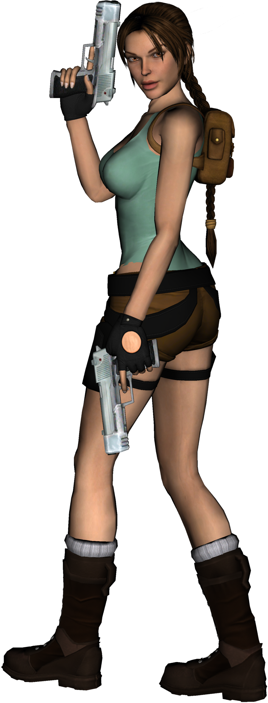
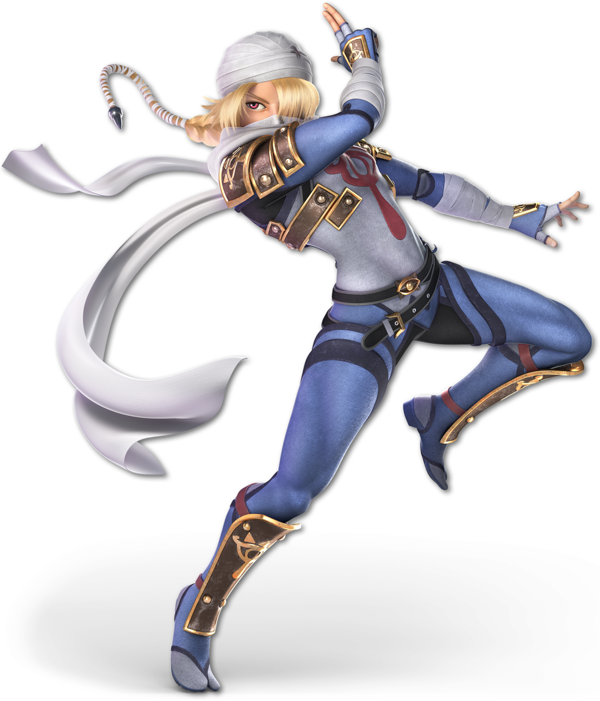
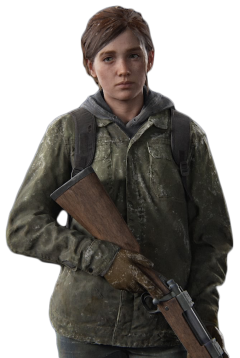

La evolución no fue lineal: fue una constante tensión entre el diseño comercial y la presión cultural. Cada arquetipo que encontrarás a continuación no es solo un personaje — es una categoría, un molde que la industria repitió durante años.



"THANK YOU MARIO! BUT OUR PRINCESS IS IN ANOTHER CASTLE."
En 1985, el personaje femenino más influyente de la historia de los videojuegos no tenía agencia. No tomaba decisiones. No actuaba. Existía como el horizonte del deseo masculino: siempre un castillo más lejos, siempre a rescatar.
Peach no era un personaje — era una función narrativa. El motor que ponía a Mario en movimiento sin necesitar moverse ella misma. Su ausencia era el plot. Su presencia, la recompensa.
Este patrón — la "Damsel in Distress" — no fue inventado por Nintendo. Fue importado directamente de siglos de narrativa patriarcal y codificado en el lenguaje interactivo más nuevo del mundo.
Lo que se jugaba no era solo un videojuego. Se jugaba, sin saberlo, una norma cultural.
"I'M LARA CROFT. I CAN HANDLE IT."
Once años después de Peach, Lara Croft rompió el molde — y creó uno nuevo. Era protagonista, arqueóloga, acróbata y asesina. Tomaba decisiones. Sobrevivía. Ganaba.
Pero su cuerpo fue diseñado para la mirada masculina: proporciones imposibles, ropa mínima, movimientos sexualizados. El jugador controlaba a una mujer poderosa mientras la industria la convertía en objeto de marketing.
La paradoja de Lara Croft es la paradoja de la representación superficial: puedes tener una protagonista y seguir objectificándola. La agencia mecánica no equivale a la dignidad narrativa.
Aun así, Lara abrió una puerta. Demostró que las mujeres podían vender videojuegos. El problema era el precio que cobraban por esa demostración.
"AS SHEIK, I COULD MOVE FREELY. AS ZELDA, I WAS ALWAYS THE TARGET."
Zelda encontró una solución radical a la trampa del personaje femenino: dejar de ser femenina en apariencia. Como Sheik — andrógina, misteriosa, tácticamente brillante — podía operar en el mundo sin ser reducida a su género.
Es un análisis incómodo: ¿por qué el único camino hacia el poder era el camuflaje? ¿Por qué la identidad femenina tenía que esconderse para ser tomada en serio?
La saga de Zelda repitió este patrón durante décadas: la princesa cautiva que en secreto lo sabe todo, que actúa en las sombras, que guía al héroe sin poder serlo.
La agencia oculta es agencia a medias. Y a medias no alcanza.
"I'M NOT HER, YOU KNOW. I NEVER WILL BE."
Ellie no es heroína porque sea fuerte. Es heroína porque es humana. Tiene miedo. Falla. Se equivoca moralmente. Ama de maneras que la destruyen. Mata cuando no quiere. Sobrevive cuando no sabe por qué.
The Last of Us marcó un punto de inflexión: demostró que un personaje femenino no necesitaba ser deseable ni perfecto ni simbólico para ser protagonista. Solo necesitaba ser real.
La desvinculación de la gratificación visual fue total: el diseño de Ellie fue deliberadamente no sexualizado. Su cuerpo existía para sobrevivir, no para ser mirado.
De Peach a Ellie hay 28 años. Es mucho tiempo para un cambio que debería haber sido obvio desde el principio.
Durante décadas, los pasillos de la industria repitieron un axioma comercial como si fuera una ley de la física. Una verdad manufacturada que dictó presupuestos, limitó creatividades y justificó la ausencia.
Iniciando escaneo de mitos corporativos...
Durante años existió una creencia casi incuestionable dentro de la industria:
Era tan aceptada que afectó portadas, marketing y decisiones de desarrollo durante décadas. Pero los datos cuentan una historia distinta.
Los títulos con protagonistas femeninas se encuentran entre los mejor valorados de la última década.
La calidad no disminuye. La recepción tampoco. Y aun así, las portadas siguen actuando como si el riesgo existiera.
Estos son algunos de los títulos mejor recibidos con protagonistas femeninas:
La recepción del público no es uniforme. Al filtrar exclusivamente por títulos con liderazgo femenino, la valoración de los usuarios (User Score) revela curvas drásticamente distintas según el estudio de desarrollo detrás del proyecto.
Solo el 17.78% de las portadas muestran exclusivamente a una mujer protagonista.
Los datos de calidad muestran que la heroína no es el problema. La resistencia a mostrarla en portada sí lo es.
LA PREGUNTA YA NO ES SI LAS HEROÍNAS FUNCIONAN.
La pregunta es por qué seguimos actuando como si no funcionaran.